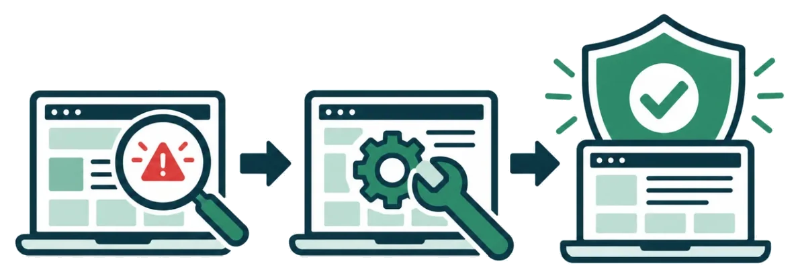
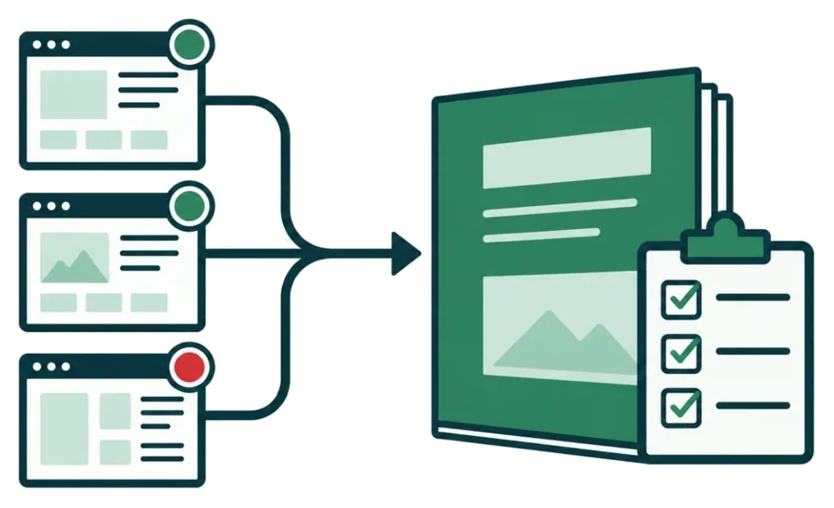

WordPressの更新と設定を、
URLだけで無料チェック
PHPやプラグインのバージョン、外から読めるログイン名など7項目を、公開されている情報だけで点検します。何が確かめられて、何が外からは分からないのかも、あわせてお伝えします。
- 登録なしで、判定まで無料
- ふつうの閲覧と同じアクセスだけ。サイトに負荷をかけません
- 結果は数十秒で出ます
サイト健診 受診票
結果の見本
| SSL証明書 | 有効（残り212日） | A |
|---|---|---|
| PHP | 8.1（サポート終了） | D |
| WordPress本体 | 最新版 | A |
| プラグイン | 配布停止1件 | E |
| ログイン名 | 外から見える状態 | C |
| 不要なファイル | readmeが残っている | B |
| セキュリティ設定 | 6項目中2項目 | C |
外から確かめられる範囲の判定です。「−」は外から読み取れなかった項目です。
弱点のあるプラグインの更新を、早めにおすすめします。
総合判定要対策
詳しい結果票をメールで受け取る
危ないプラグインの名前と、判定ごとの直し方の手順をお送りします。
メールアドレスのドメインがサイトと違う場合は、サイトの持ち主の確認をしてからお送りします。
無料の簡易診断で見る、7つの項目
どれも、攻撃する側が最初に外から確かめるところです。ホームページのどこを見ているのかを、番号で示しました。放っておくと何が起きるかまで、結果票に書きます。
SSL証明書
見ているところ証明書が有効か、期限が近づいていないか
放っておくとブラウザに「保護されていない通信」と出て、問い合わせが減ります
PHP
見ているところサーバーで動いているPHPのバージョン
放っておくとサポートが終わった版は、新しく見つかった弱点が直されません
WordPress本体
見ているところ本体のバージョンと、更新が止まっていないか
放っておくと公表済みの弱点を狙った攻撃の的になります
プラグイン
見ているところ外から分かるプラグインが、最新版から遅れていないか、配布停止になっていないか
放っておくと改ざんや不正なページの埋め込みの入り口になりやすい部分です
ログイン名
見ているところ管理画面のログイン名が外から読み取れないか
放っておくとパスワードを総当たりで試す攻撃を受けやすくなります
不要なファイル
見ているところ説明ファイルやファイルの一覧が、公開されたままになっていないか
放っておくとバージョンや中身が外から知られ、攻撃の手がかりになります
セキュリティ設定
見ているところブラウザに守り方を指示する設定（セキュリティヘッダー）
放っておくとなりすましページへの埋め込みなどを防ぎにくくなります
判定は、健康診断と同じA〜Eの5段階です
どこから手をつければいいかが、ひと目でわかります。判定は外から確かめられる範囲での結果で、管理画面の中やサーバーの中は詳細診断で確かめます。
A問題なし
外から確かめられる範囲では、問題は見つかりませんでした。
B軽い注意
すぐの危険はありませんが、次の更新のときに直しましょう。
C経過観察
単独では危険が小さくても、ほかの弱点と重なると狙われます。
D要対策
弱点が残っています。1か月以内の対策をおすすめします。
E至急対策
直される見込みのない弱点や期限切れがあります。できるだけ早く対策してください。
見つけたあとまで、同じ担当者が見届けます
判定を出して終わりにはしません。自分で直したい方には手順を、任せたい方には作業を。どちらも選べます。

その場で結果がわかる
URLを入れて数十秒で、7項目の判定が画面に出ます。何日も待つ必要はありません。
自分で直せる手順つき
結果票には、判定ごとの直し方を書きます。社内で対応できるものは、そのまま進められます。
改ざんを毎日チェック
定期診断スタンダードでは、ページの中身を毎日1回比べます。書き換えを見つけたら担当者が確かめ、営業日のうちにメールでご連絡します。
対策まで同じ担当者
診断した担当者が、PHPやプラグインの更新、設定の見直しまで行います。説明のやり直しがいりません。
対策後の再診断は無料
詳細診断のあと、直したところをもう一度点検して、判定が上がったことを確かめます。
制作会社さま向けプラン
お客さまのサイトをまとめて点検し、御社の名前で報告書を出せます。保守のメニューに加えられます。
点検するのは、WordPressを12年以上つくってきた担当者です
サイトドックは、Web制作とSEOの仕事をしているインフォサクセスが運営しています。自動の点検で見つけた弱点は、詳細診断と対策作業で、同じ担当者が最後まで直します。
これまで、制作会社さまからのご依頼で、中小企業のWordPressサイトのセキュリティ調査、PHPの更新、プラグインの更新、使われていないアカウントの整理、WAFの設定を手がけてきました。自分で運営しているWordPressサイトも、同じ手順で点検しています。
運営者情報と対応事例を見るクラウドワークスのプロフィールランサーズのプロフィール
- 運営
- インフォサクセス（個人事業）
- 担当
- 高崎
- 経験
- WordPress制作 12年以上、SEO 15年以上
- 資格
- SEO検定1級
- 対応時間
- 平日 9:00〜18:00
- 営業電話
- 診断をした方に、こちらから電話をかけることはありません
- 228件クラウドワークスでの受注実績（総合評価4.9、評価134件）
- TOPプロクラウドワークスのTOPプロクラウドワーカー（2026年10月度）
- 56件ランサーズの「満足」の評価（残念1件）
- 15サイト自社で運営するWordPressサイトを定期点検
件数と評価は、2026年10月29日時点の各サービスのプロフィールの表示です。
料金
まずは無料の簡易診断から。判定を見てから、必要なものだけ選んでいただけます。表示はすべて税込です。
無料簡易診断
まず今の状態を知りたい方に
0円
登録なしで判定まで
- 7項目を自動で点検
- 判定をその場で表示
- 詳しい結果票をメールでお届け
詳細診断
気になる判定が出た方、中まで確かめたい方に
29,800円
1サイト・1回
- 簡易診断の全項目
- 管理画面とサーバー設定の確認
- プラグインとアカウントの棚卸し
- 報告書（PDF）と対策の優先順位
- 結果のご説明（オンライン30分）
- 対策後の再診断1回無料
定期診断ライト
自分で更新できる方の見張り役に
4,980円／月
1サイト
- 週1回の自動点検
- 月1回の結果票
- 使っているプラグインに新しい弱点が出たらメールでお知らせ
- SSL証明書とドメインの期限のお知らせ
おすすめ
定期診断スタンダード
更新作業までまるごと任せたい方に
19,800円／月
1サイト
- 毎日の自動点検
- 改ざんの検知とご連絡
- 月1回のPHP・プラグイン更新の代行
- 更新前のバックアップ
- 月1回の報告書
- 緊急時の初動対応（サイトの一時停止・復旧の手配）
対策作業（単発）
PHPの更新、プラグインの更新、不要なアカウントの整理、WAFの設定など。診断結果をもとにお見積もりします。
14,800円〜
ご利用の流れ
URLを入力
診断したいサイトのURLを入れて、ボタンを押すだけです。登録はいりません。
その場で判定
数十秒で、7項目の判定と総合判定が画面に出ます。
結果票を受け取る
メールアドレスを入れると、危ないプラグインの名前と直し方を書いた結果票が届きます。
必要な対策だけ相談
気になる判定があれば、詳細診断や対策作業をご相談ください。無理におすすめはしません。
制作会社さま、保守会社さまへ
お客さまのサイトの点検を、まとめてお任せいただけます。報告書は御社の名前で出せるので、保守メニューの一つとしてお使いいただけます。料金はサイト数に応じてお見積もりします。

- 複数サイトの一括点検と、サイトごとの結果票
- 御社名・ロゴ入りの報告書
- PHP更新などの対策作業も、御社の名前で代行
よくある質問
診断でサイトが止まったり、重くなったりしませんか。
簡易診断は、ふつうにページを閲覧するのと同じアクセスを数回行うだけです。書き込みやログインの試行はしないので、サイトの動きには影響しません。
他人のサイトも診断できてしまいませんか。
画面に出るのは判定だけです。危ないプラグインの名前などを書いた詳しい結果票は、メールアドレスのドメインがサイトと同じでない場合、サイトの持ち主であることを確認してからお送りします。
WordPress以外のサイトでも使えますか。
SSL証明書、PHP、不要なファイル、セキュリティ設定は、どのサイトでも点検できます。プラグインとログイン名の項目はWordPressのサイトが対象です。
制作会社につくってもらったサイトでも大丈夫ですか。
大丈夫です。結果票は制作会社さまにそのまま転送していただける書き方にしています。対策を制作会社さまにお願いするか、こちらで行うかはお選びいただけます。
悪い判定が出たら、必ず有料の対策が必要ですか。
いいえ。結果票には、ご自身で直せるものはその手順も書いています。手が回らないときだけ、ご相談ください。
支払い方法を教えてください。
請求書をお送りしますので、銀行振込でお支払いください。

まずは、今の状態を
知るところから。
URLを入れるだけで、数十秒で判定が出ます。登録はいりません。結果を見てから、次に何をするか決めてください。